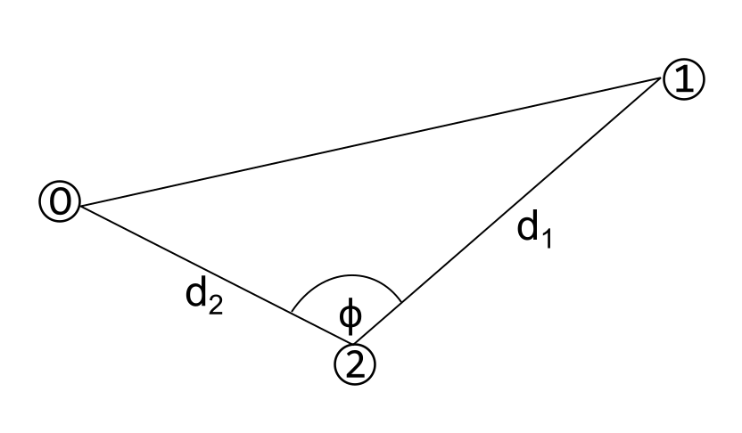

Paralaksa
Tukaj le iz zgodovinskih razlogov : )
Koordinate objekta
Program določi ekvatorialne koordinate objekta na podlagi fotografije. Vnesemo koordinati dveh zvezd 1 in 2, potrebne razdalje ter vmesni kot.
| RA1: | |
| Dec.1: | ° ' " |
| RA2: | |
| Dec.2: | ° ' " |
| d1: | |
| d2: | |
| φ: | ° |
Vpiši podatke za izvedbo programa!
Višina in oddaljenost
Iz topocentričnih ekvatorialnih koordinat objekta iz dveh opazovališč ter geografskih koordinat teh dveh krajev program določi višino in geografske koordinate opazovanega objekta. Zemlja je obravnavana kot elipsoid.
| Geo. širina 1: | ° |
| Geo. dolžina 1: | ° |
| Nad. višina 1: | m |
| Geo. širina 2: | ° |
| Geo. dolžina 2: | ° |
| Nad. višina 2: | m |
| RA1: | |
| Dec.1: | ° ' " |
| RA2: | |
| Dec.2: | ° ' " |
Vpiši podatke za izvedbo programa!